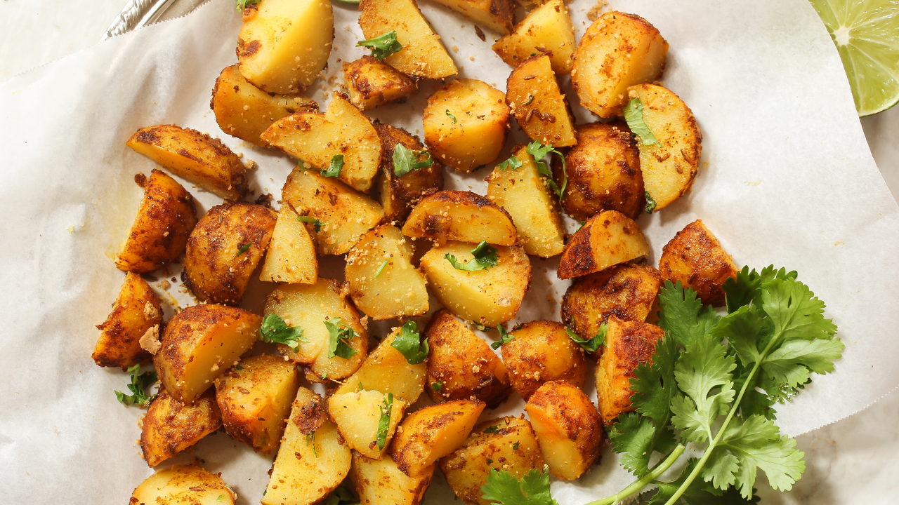

Herbed Roasted Potatoes
Prep time:
10 mins
Yield:
4
Ingredients
4 medium potatoes, cut into wedges
12 tablespoons olive oil
1 teaspoon garlic powder
1 teaspoon dried rosemary
1 teaspoon dried thyme
1/2 teaspoon paprika
1/2 teaspoon salt
Steps
Preheat oven to 200°C (400°F). Line a baking sheet with parchment paper.
In a large bowl, toss potato wedges with olive oil, garlic powder, rosemary, thyme, paprika, and salt.
Spread potatoes in a single layer on the baking sheet. Roast for 25-30 minutes, flipping halfway, until golden brown and crispy.